- Part 1 — Getting Set Up & Your First Cards
- Why Anki Works
- Getting Started
- Tweaking Settings for Best Results
- Install Review Heatmap
- Notes, Cards & Note Types
- Creating Your Note Type
- Adding Your First Note
- Part 2 — Audio, Card Styling & AI-Generated Cards
- HyperTTS — Automatic Audio
- Styling Your Cards
- Creating Cards with AI
Part 1 — Getting Set Up & Your First Cards
This section takes you from a fresh install to a working vocabulary deck with your own custom note type. By the end you'll have a properly configured Anki setup and a clear mental model of how the whole system fits together.
1. Why Anki Works
Anki is a flashcard app built around spaced repetition — a memorisation technique that exploits two well-documented principles of memory science.
The first is the forgetting curve, described by Hermann Ebbinghaus in the 1880s: without reinforcement, memory decays rapidly and predictably over time. The second is the spacing effect: reviewing information at growing intervals dramatically slows this decay, because each successful recall while a memory is still accessible — but beginning to fade — strengthens it far more than reviewing it when it's still fresh.
Anki schedules every card individually so it reappears just before you'd naturally forget it. Cards you know well appear less and less frequently. Cards you're struggling with reappear sooner. Over time, solidly-known cards might come up only once every few months — which means you can maintain a large vocabulary with a surprisingly small daily review load.
FSRS vs SM-2 — which algorithm does Anki use?
Anki's original scheduling algorithm was SM-2 (SuperMemo 2), developed in the 1980s. It's reliable and widely proven. However, modern research has produced a successor: FSRS (Free Spaced Repetition Scheduler), which builds an individual memory model for each card rather than applying a universal formula.
FSRS typically reduces total review time while maintaining the same — or better — retention rate. It's now built into Anki and is the recommended algorithm for new users. We enable it in Section 3.
Active recall vs passive review — why it matters
Flashcards force you to actively retrieve a piece of information from memory before seeing the answer. This is called the testing effect (or retrieval practice effect), and it produces considerably stronger, more durable memories than passively re-reading notes or highlighting text.
Crucially, even a failed attempt to recall something — where you guess wrong before flipping the card — improves later retention more than never testing yourself at all. The mental effort of trying to retrieve, even unsuccessfully, is what drives the memory consolidation.
This is why learners who use Anki consistently see results that feel disproportionate to the time invested.
2. Getting Started
Download Anki from the official site. The desktop app is free for Windows, macOS, and Linux. A companion mobile app lets you review on your phone, automatically synced to your desktop collection via a free AnkiWeb account.
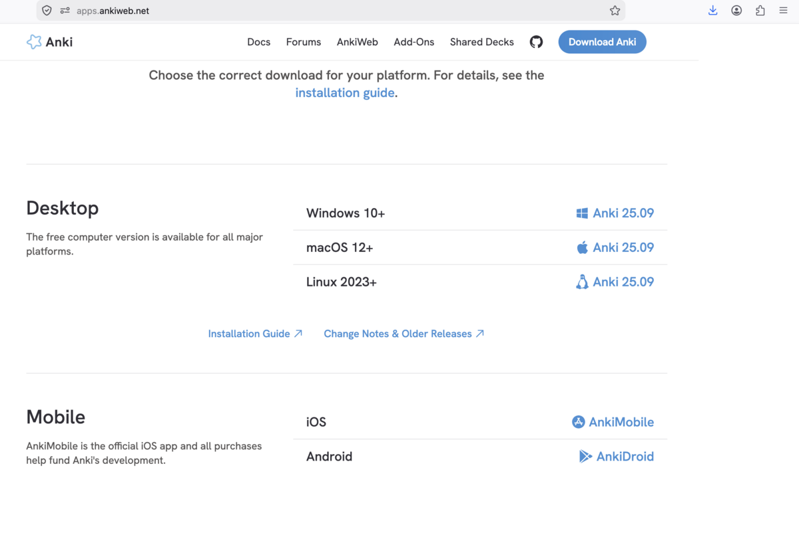
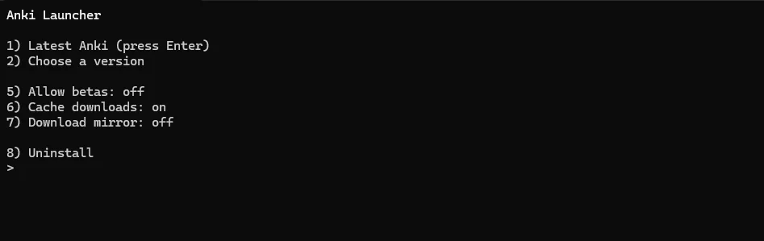
.dmg launches this installer prompt. Press Enter to install the latest stable version — option 1 is the right choice for most users.Setup checklist
- Download and install Anki from apps.ankiweb.net
- Create a free AnkiWeb account with your email address and verify it
- In the desktop app, click Sync in the top bar — Anki will ask for your account credentials
- Optionally: install AnkiDroid (Android) or AnkiMobile (iOS) and sign in to the same account for seamless cross-device sync
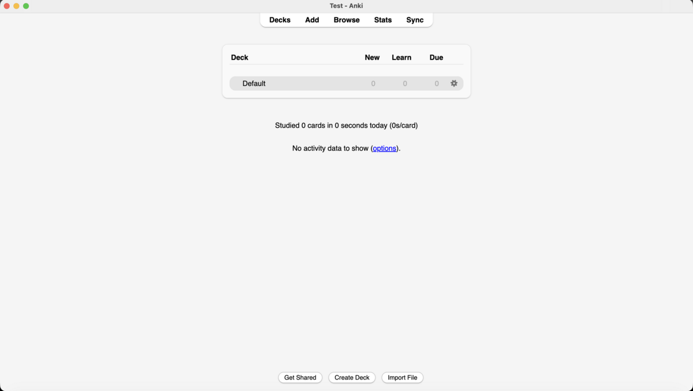
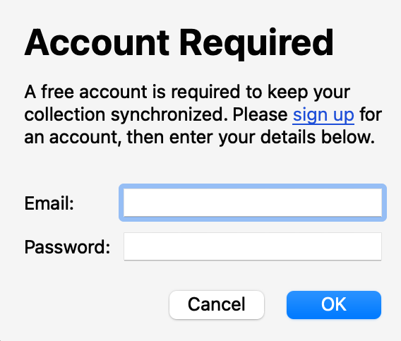
3. Tweaking Settings for Best Results
Anki's defaults are functional, but a few targeted changes make a significant difference. The most important change — enabling FSRS — should be done before you add your first card, as it affects how all future cards are scheduled.
3a · Enable FSRS (the modern scheduler)
FSRS is Anki's modern scheduling algorithm. It outperforms SM-2 by building an individual memory model for each card, adapting to your personal memory patterns over time rather than applying a one-size-fits-all formula.
To access these settings, click the gear icon (⚙) beside your deck and choose Options:
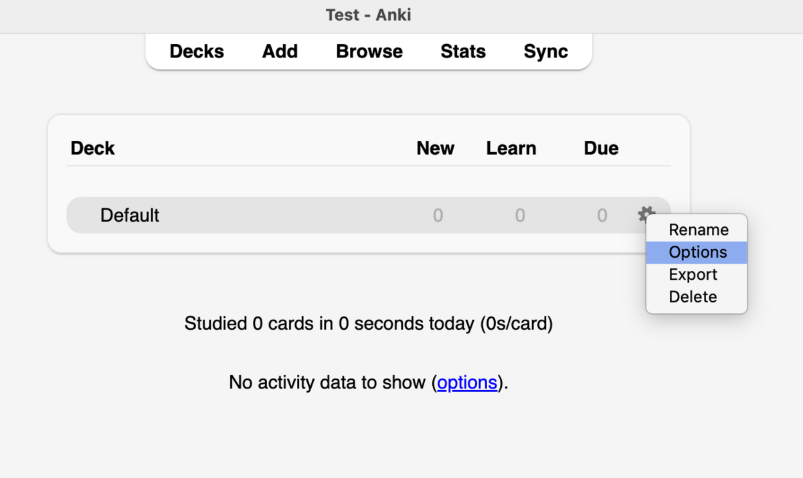
Scroll down past Daily Limits and New Cards to reach the FSRS section:
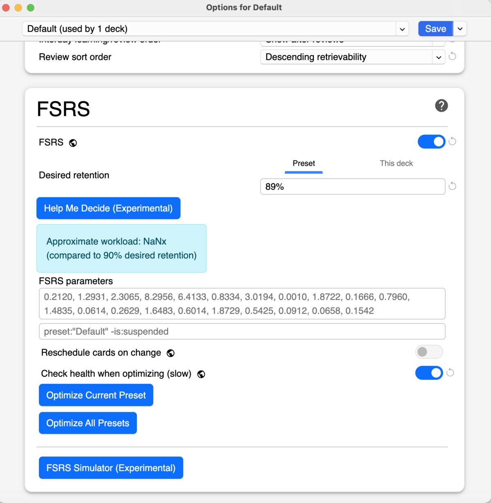
0.90, and click Save. Once you've completed a few hundred reviews, return here and click Optimise Current Preset to calibrate the model to your actual memory performance.- Scroll to the FSRS section within Options
- Toggle FSRS on
- Set Desired retention to
0.90— this means Anki aims for you to correctly recall 90% of cards when they come due - Click Save
- After 300+ reviews: return here and click Optimise Current Preset to personalise the model to you
3b · Daily Limits & New Cards — keeping workload sustainable
The top portion of Options controls how many new cards Anki introduces each day and how many reviews it schedules.
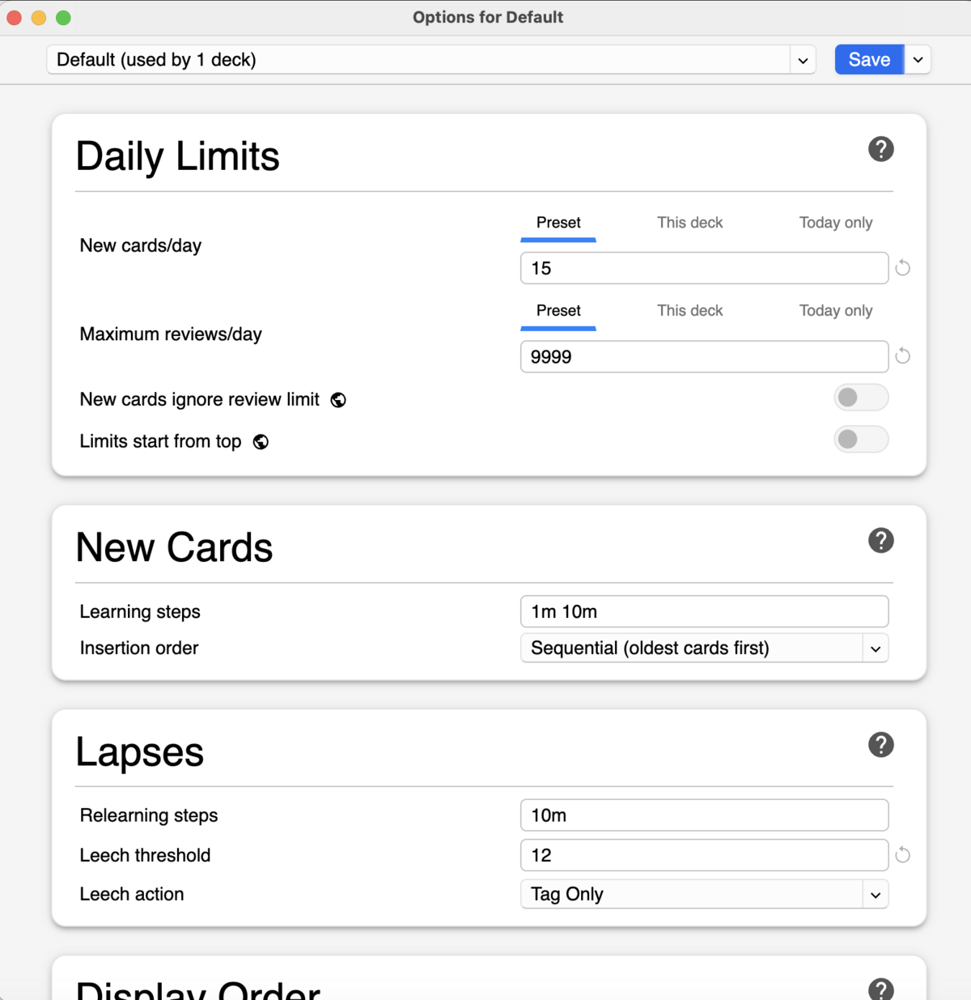
Key settings explained:
- New cards/day: Start conservatively —
10–15per day is a sustainable pace for most learners. Every new card you introduce now creates future review obligations. It's easy to add more later; recovering from a backlog is demoralising. - Maximum reviews/day: Set this to
9999(effectively unlimited) and let FSRS decide the actual workload. Artificially capping reviews causes cards to pile up and undermines the whole scheduling system. - Learning steps: The default
1m 10mis sensible — a brand-new card reappears after 1 minute, then 10 minutes, before graduating to day-length intervals. Leave this as-is when starting out.
4. Install Review Heatmap
Review Heatmap adds a GitHub-style contribution calendar to your Anki main screen, showing at a glance which days you reviewed and how many cards you studied. Seeing your streak visualised is one of the most effective motivation tools in the Anki ecosystem — the desire to keep the grid unbroken is a surprisingly powerful force.
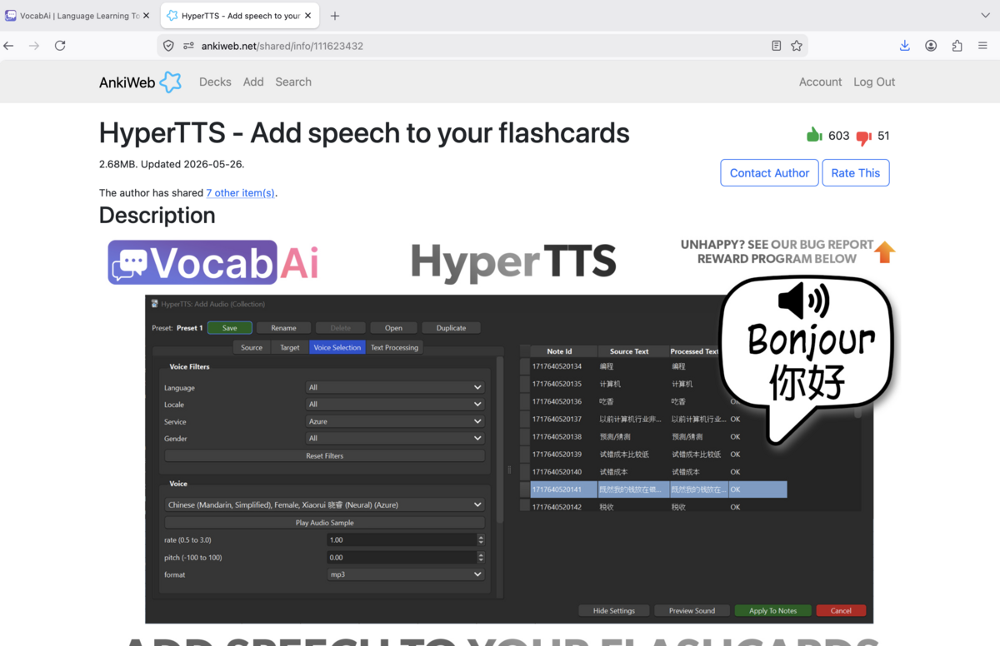
Installing any Anki add-on follows the same two-step process. First, open the add-ons manager via Tools → Add-ons:
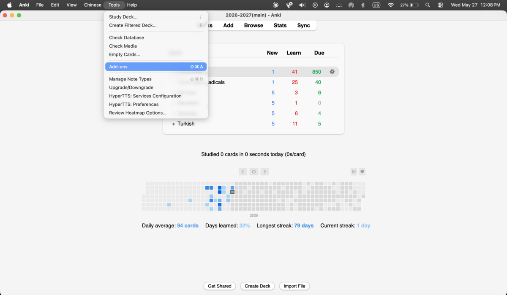
Then click Get Add-ons… to open the install dialog:
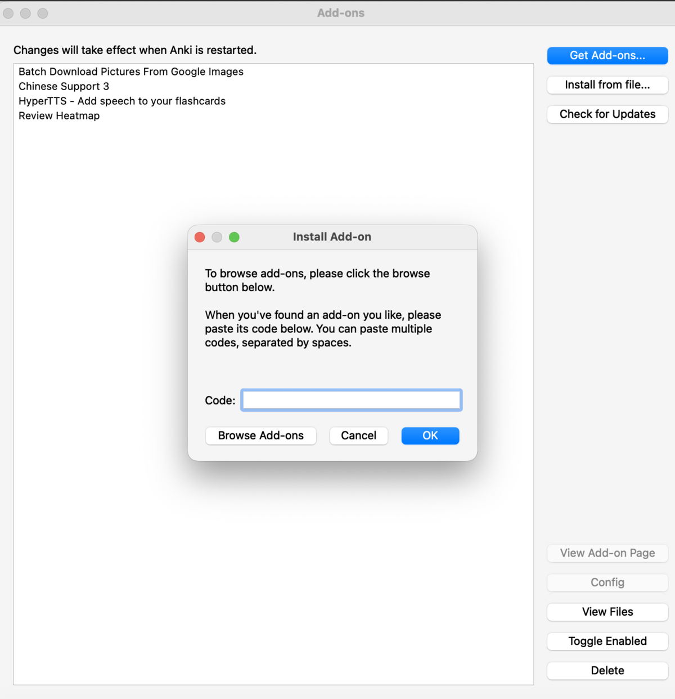
- Go to Tools → Add-ons → Get Add-ons…
- Enter code
1771074083 - Click OK and wait for the download to complete
- Restart Anki — the heatmap appears on your main screen automatically after restarting
5. Notes, Cards & Note Types
This is the most important conceptual distinction in Anki, and it's worth making sure it's clear before you build anything: you don't create cards directly — you create notes, and Anki generates one or more cards from each note automatically.
A note is a unit of information — for example: a German word, its translation, an example sentence, and its grammatical gender. A card is a specific testable question generated from that note — "what is the German word for X?" or "what does Y mean?". One note can generate multiple cards testing different directions, all sharing the same underlying data.
This means if you spot a mistake in a word's translation, you fix it in one place — the note — and both the recognition card and the recall card are updated automatically.
What is a Note Type?
A note type (also called a note model) is a reusable template that defines three things:
- Which fields each note has (e.g. Word, Translation, Audio, Example Sentence, Notes)
- Which card templates are generated from those fields (e.g. Word → Translation, Translation → Word)
- The HTML and CSS that controls how those cards look
Change anything in the note type — a field name, a card template, the CSS — and every note using that type updates automatically across your entire collection.
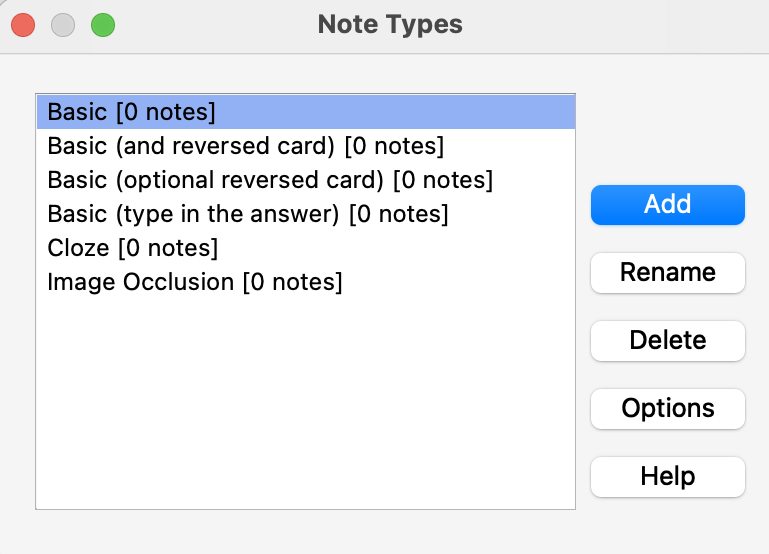
Why create a custom note type instead of just using Basic?
Anki's built-in Basic note type has only two fields: Front and Back. That works for simple trivia, but for language learning you want more structure.
A custom note type lets you:
- Store structured data for each vocabulary item — word, translation, audio, example sentence, grammatical notes — in dedicated fields
- Generate multiple card directions from a single note entry (recognition, recall, listening)
- Use add-ons like HyperTTS to automatically fill the Audio field across your whole deck
- Style cards consistently with shared CSS — one design change updates every card in the note type
- Import AI-generated vocabulary lists cleanly, with each column mapping to the correct field
It takes about 5–10 minutes to set up once. Every card you ever add afterward benefits from that structure.
6. Creating Your Note Type
6a · Add a new note type
- Open Tools → Manage Note Types
- Click Add
- Select Add: Basic as your starting point — you'll customise it fully in the next steps
- Name it something clear: e.g. Language Vocab, German Vocab, Mandarin Words
- Click OK
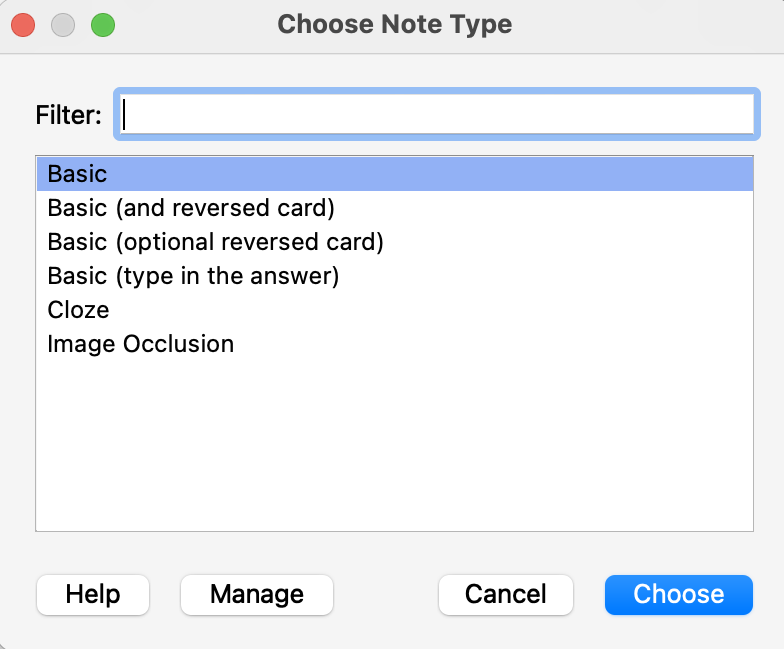
6b · Configure your fields
With your new note type selected in the Note Types manager, click Fields. You'll see the default Front and Back fields. Rename and add fields to match the structure you need:
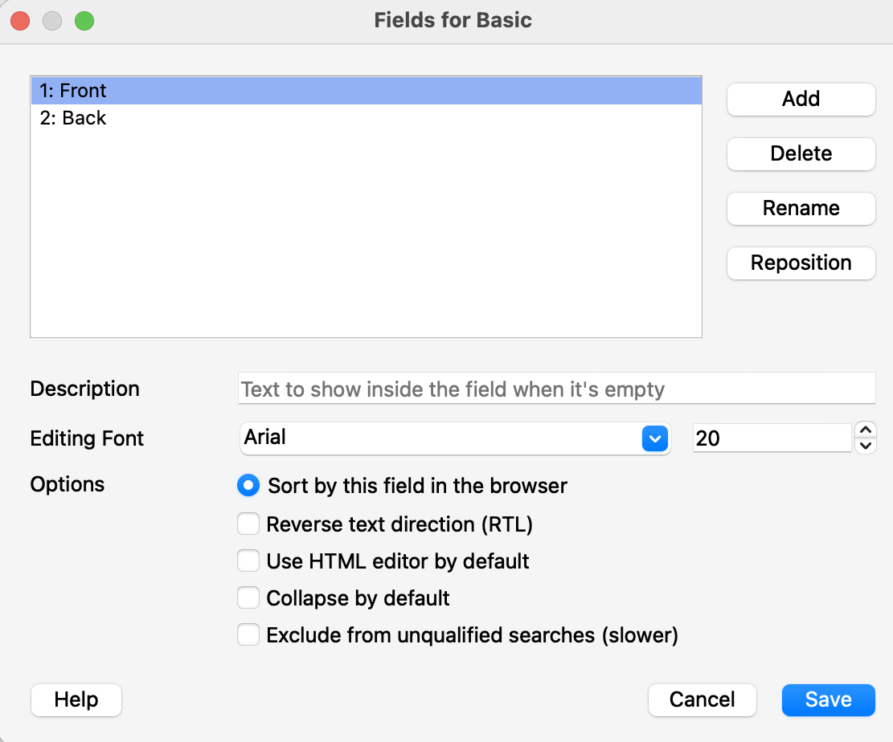
Suggested field structure for a language learning note type:
| Field name | Purpose |
|---|---|
Word | The target-language word or phrase — this is what HyperTTS reads to generate audio |
Translation | Meaning in your native language |
Audio | Pronunciation sound file — leave blank; HyperTTS fills this automatically in Part 2 |
Example Sentence | An in-context example in the target language |
Notes | Grammatical gender, register, irregular forms, or personal memory hooks |
Word, Translation, Audio — to avoid mismatches when you write card templates or import AI-generated card lists.
6c · Design your card templates
Click Cards to open the card template editor. This is where you define what each side of a card looks like, using HTML for structure and CSS for appearance.
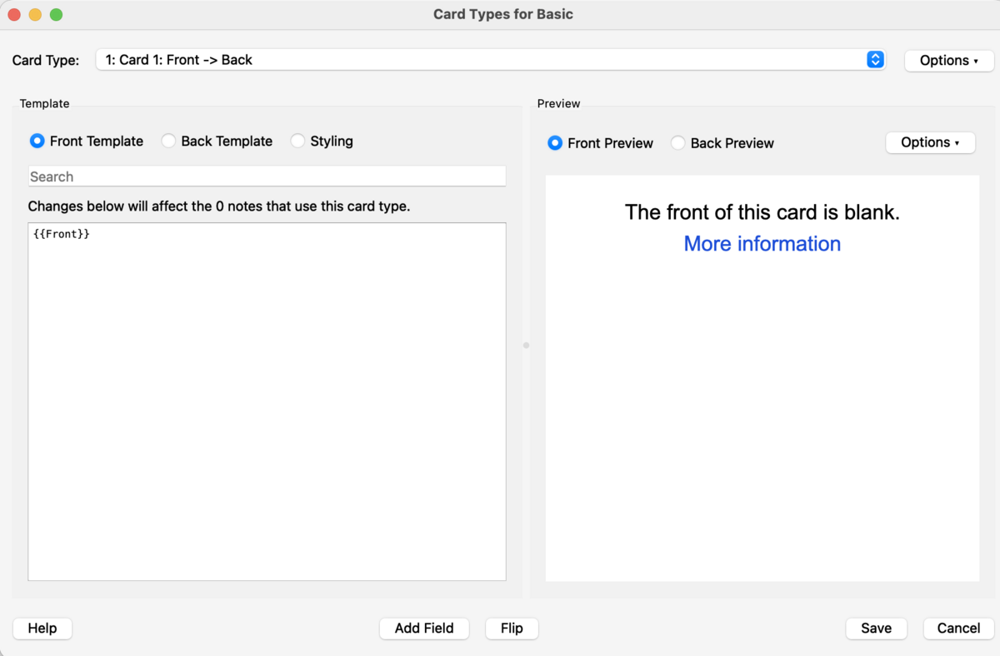
{{Word}}, {{Translation}}, etc.The three tabs serve distinct purposes:
| Tab | What goes here |
|---|---|
| Front Template | HTML that renders the question side of the card |
| Back Template | HTML for the answer side — typically starts with {{FrontSide}} to include the question, then adds the answer |
| Styling (CSS) | CSS rules that apply to both sides of every card in this note type |
Suggested card templates:
- Template 1 — Recognition: Word + Audio → Translation + Example Sentence + Notes
- Template 2 — Recall: Translation → Word + Audio
- Template 3 — Listening: Audio only → Word + Translation
Templates 1 & 2 are sufficient for most learners. Add Template 3 once you have audio in your deck — it's an effective way to build listening comprehension without any extra note-taking effort.
To add a second card template, click Options → Add Card Type in the template editor:
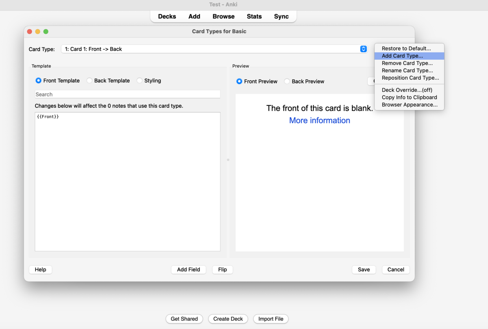
7. Adding Your First Note
From Anki's main screen, click Add (or press A) to open the note editor. Before typing anything, check that the Type dropdown at the top shows your custom note type — not the default Basic.
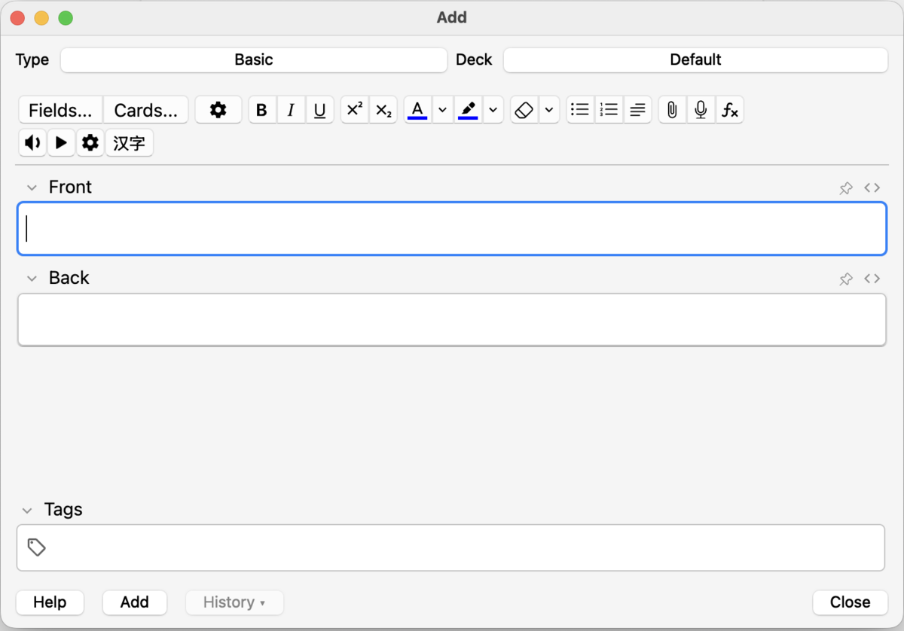
- Click Add on the main screen (or press A)
- Confirm the Type dropdown shows your custom note type
- Fill in Word — the target-language word or phrase you want to learn
- Fill in Translation — the meaning in your native language
- Add an Example Sentence if you have one — even a rough one helps anchor the word in context
- Add Notes if relevant — gender, register, a memorable association, an irregular form
- Leave Audio blank — HyperTTS fills this across your whole deck in Part 2
- Click Add to save. The dialog stays open so you can add the next note immediately.
- Add 5–10 notes, then click Study Now on your deck to do your first review session
Part 2 — Audio, Card Styling & AI-Generated Cards
This section covers three tools that take your Anki setup from functional to excellent: HyperTTS for automatic audio generation across your whole deck, card template styling for clean and readable card design, and AI-assisted card creation for building large high-quality decks quickly.
1. HyperTTS — Automatic Audio
HyperTTS is an Anki add-on that automatically fills your Audio field using text-to-speech (TTS). It connects to VocabAI, which provides access to high-quality voices from Google, Azure, Amazon, ElevenLabs, and others. You point it at your Word field, choose a voice, and it generates audio for every note in your deck — typically in under a minute, with no manual recording required.
1a · Install HyperTTS
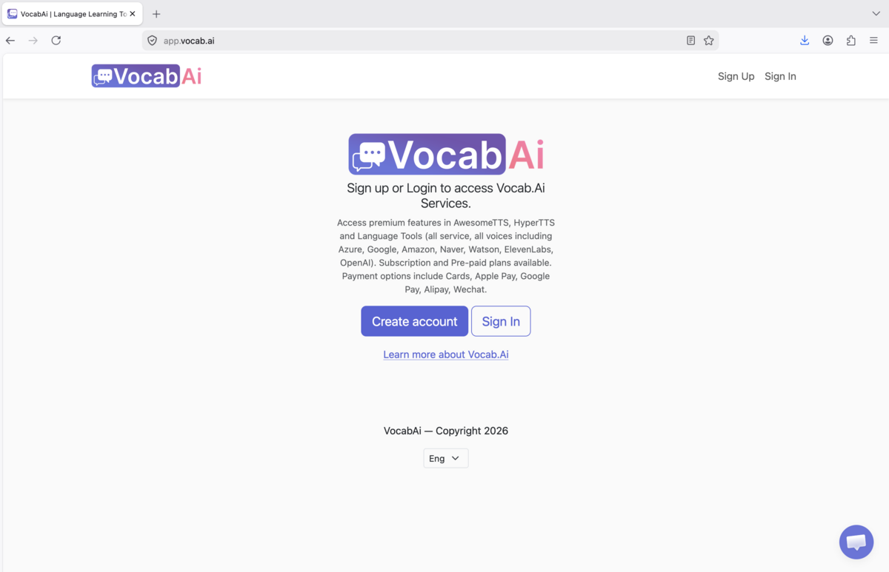
- In Anki: Tools → Add-ons → Get Add-ons…
- Enter code
1508862472 - Click OK and wait for the download
- Restart Anki — after restarting, you'll see HyperTTS entries in the Tools menu
1b · Create a free VocabAI account
HyperTTS connects to VocabAI for voice access. A free account is available with a generous monthly character allowance — sufficient for a typical language learner's workflow.
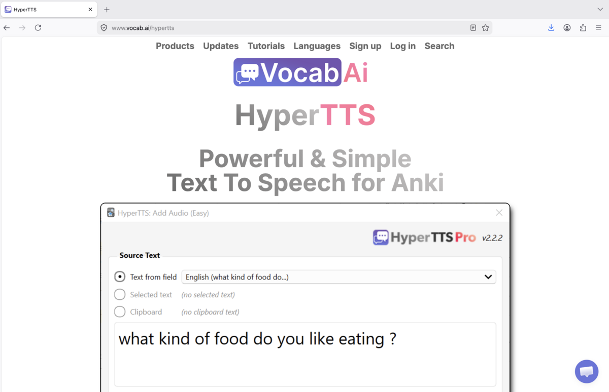
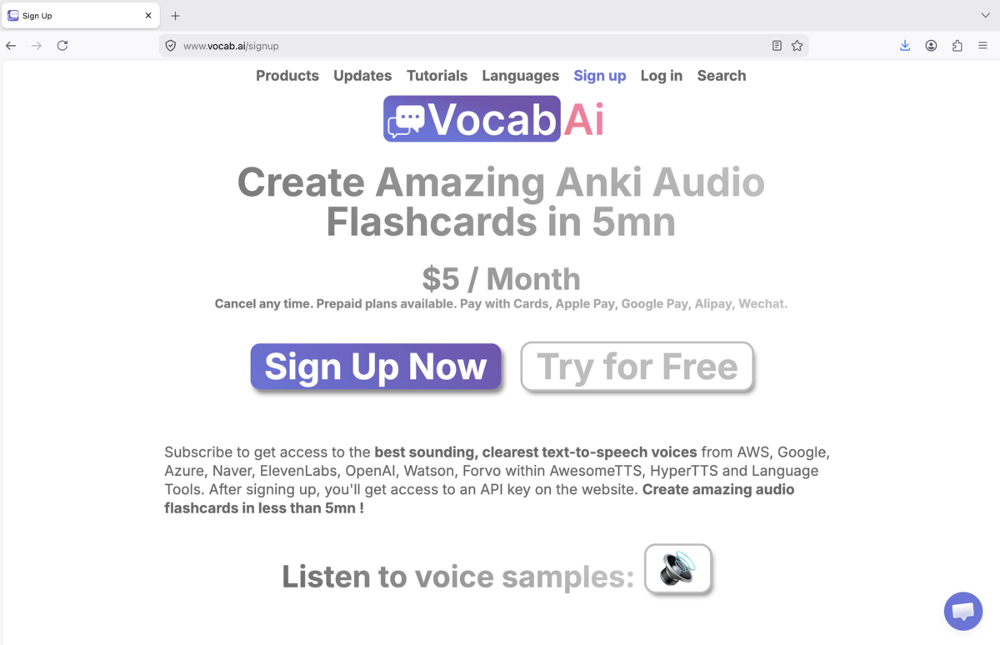
- Go to vocab.ai/signup and create a free account
- Verify your email, then log in at app.vocab.ai
- Copy your API key from the dashboard
1c · Connect HyperTTS to your VocabAI account
- In Anki: Tools → HyperTTS: Services Configuration
- Find VocabAI in the services list
- Paste your API key into the field provided
- Click Verify — you should see your account status and remaining character balance confirmed
1d · Add audio to your deck
- Open the Browse window and select all notes in your deck (Ctrl+A / Cmd+A)
- With notes selected, go to HyperTTS → Add Audio (Note Types)
- Set Source field to Word — the field containing your target-language text
- Set Target field to Audio
- Choose a voice — select a native-speaker voice for your target language. Browse by language and listen to samples.
- Click Preview Sound on a sample card to verify the quality sounds natural
- Click Apply to Notes — HyperTTS processes all selected notes and fills the Audio field for each one

2. Styling Your Cards
Card styling is done entirely within your note type's card templates, using standard HTML for layout and CSS for appearance. Open the template editor via: Tools → Manage Note Types → [your type] → Cards.
The CSS you write here applies to every card generated by this note type — one design change instantly updates your entire deck. Card styling renders consistently on desktop, iOS, and Android.
2a · A clean starter template
Front Template:
{{Word}}
{{Audio}}
Back Template:
{{FrontSide}}
<hr id=answer>
<div class="translation">{{Translation}}</div>
<div class="example">{{Example Sentence}}</div>
<div class="notes">{{Notes}}</div>
Styling (CSS):
.card {
font-family: sans-serif;
font-size: 22px;
text-align: center;
color: #fff;
background: #1a1a1a;
padding: 1.5em;
}
.translation { color: #7eb8f7; margin-top: 0.5em; }
.example { color: #aaa; font-style: italic; margin-top: 0.5em; font-size: 0.82em; }
.notes { color: #666; font-size: 0.72em; margin-top: 0.5em; }
2b · Styling principles for language learning cards
- Use a large font for the tested word: 22px or higher. You're testing recognition and recall, not reading small print. The target word should be immediately legible.
- Establish a colour hierarchy: Bright/white for the word being tested; a mid-tone colour for the translation; dimmer still for example sentences and notes. This lets you scan a card in half a second.
- Use conditional fields to avoid blank space. Wrap optional fields in
{{#FieldName}}…{{/FieldName}}— the block only renders if the field contains content. - Dark backgrounds are easier on the eyes during long review sessions. The example CSS above uses near-black — adjust to your preference.
- Keep it simple. A clean, fast-to-read card is more effective than a visually complex one. Every second spent parsing the layout is a second not spent on the actual memory work.
3. Creating Cards with AI
AI tools — DeepSeek, ChatGPT, Claude — can generate complete, ready-to-import card lists in seconds. The workflow: write a structured prompt specifying your fields and output format, paste the AI response into a text file, and import it directly into Anki. A well-written prompt produces 20–30 high-quality vocabulary cards in under a minute.
3a · The import workflow
- Write a prompt specifying your exact fields and output format (see examples below)
- Copy the AI's output into a plain
.txtfile - In Anki: click Import File on the main screen (or File → Import)
- Set the field separator to Tab
- Match each column to the correct field in your note type
- Set the import behaviour to Add notes for new cards, or Update notes where first field matches to avoid duplicates
- Click Import — cards appear in your deck instantly
3b · Sample prompt for vocabulary cards
Paste this template directly into any AI tool and adapt the language and topic:
Generate 20 German vocabulary flashcard entries for household items. Output as tab-separated values with no header row. Columns in this exact order: 1. German word or phrase 2. English translation 3. Example sentence in German (natural, contemporary usage) 4. Grammar notes (grammatical gender for nouns; irregular forms if relevant) Rules: - No markdown formatting, no asterisks, no backticks - No header row - Tab-separated only — no commas, no pipes - One entry per line
3c · Tips for better AI output
- Always specify no header row and the exact separator. Tabs are the most reliable choice for Anki imports — commas cause problems with sentences that contain commas.
- Explicitly ban markdown formatting — asterisks, backticks, and bullet points break the import silently and are hard to spot until you're reviewing.
- Generate in batches of 20–30 rather than 100+ at once. Quality is more consistent in smaller batches, and you can review each batch before importing the next.
- Ask for high-frequency vocabulary within your topic, not exhaustive lists. The 20 most common kitchen words are more useful than 100 obscure ones.
- Request natural, contemporary example sentences rather than textbook-style ones. Modern AI generally does this well if you specify it explicitly.
- Spot-check before running HyperTTS. AI is highly reliable but not perfect. Five minutes of checking now prevents audio being generated for cards you'll need to delete later.
3d · AI tool quick comparison
| Tool | Cost | Strengths for Anki card generation |
|---|---|---|
| DeepSeek | Free tier available | Excellent for Asian language vocabulary; fast; handles complex scripts and tone notation reliably |
| ChatGPT | Free / paid tiers | Nuanced grammar notes; handles a wide range of languages; highly reliable output formatting |
| Claude | Free / paid tiers | Strong grammar explanations; natural-sounding example sentences; follows format instructions precisely |
All three tools generate high-quality language flashcards. Use whichever you already have access to — the prompt template above works with any of them.
Final Checklist
- HyperTTS installed and connected to VocabAI with a verified API key
- Audio generated and previewed for at least one deck
- Card templates styled with custom HTML/CSS matching your preferences
- At least one batch of AI-generated cards imported and spot-checked for accuracy